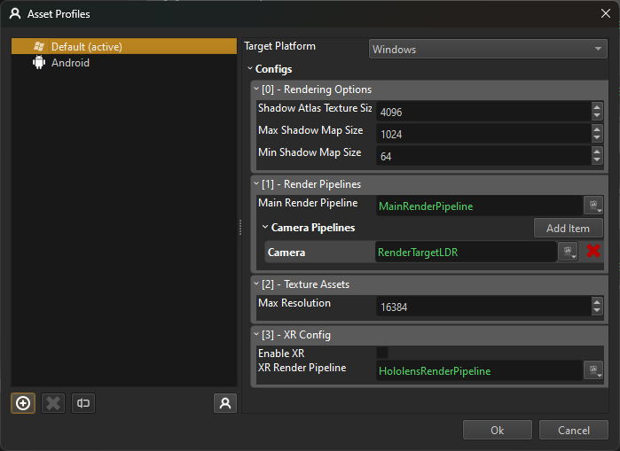

Asset Profiles
Asset profiles are used to set platform-specific, project-wide configurations. For example, on PC a different rendering pipeline may need to be used than on Android.
Under Project > Project Settings > Asset Profiles you can open the Asset Profiles dialog.

The list on the left hand side lists all the asset profiles that are defined for this project. You can add as many as you like, which allows you to switch between different configurations even on the same platform.
For the selected profile, the right hand side shows the available options. In the top right you can select for which target platform this profile is meant.
Asset Profile Configs
Below that the available asset profile configs are listed. These can affect various aspect of the engine:
Rendering Options
This allows you to configure some general rendering options that shall be used on this target platform. For example, the dynamic shadows.
Render Pipelines
Here you can specify what the default render pipeline should be. Different platforms have different rendering capabilities, so you may want to use a different pipeline to target that hardware best.
Additionally you can add render pipelines to be used for certain use cases. For example in the screenshot above an extra Camera pipeline was added, which uses a simpler render pipeline. This can then be selected on a camera component, in case it is used for render to texture (TODO). Again, you can define per platform, which pipeline to use.
Texture Assets
This configuration specifies how to transform texture assets. At the moment it only allows you to clamp the maximum resolution.
XR Config
On platforms where XR is supported, this configuration allows you to enable and configure XR support.
Switching the Active Profile
In the editor there is always one profile active. Thus systems that can be configured through asset profiles will read their settings from this active profile and change their behavior.
Additionally, some assets produce platform specific output. For example textures may use different file formats or different transform options. The active profile determines which output to use. For example if you add a PC profile with a very low maximum texture size (say 32) and then activate that profile, the editor will switch to those assets.